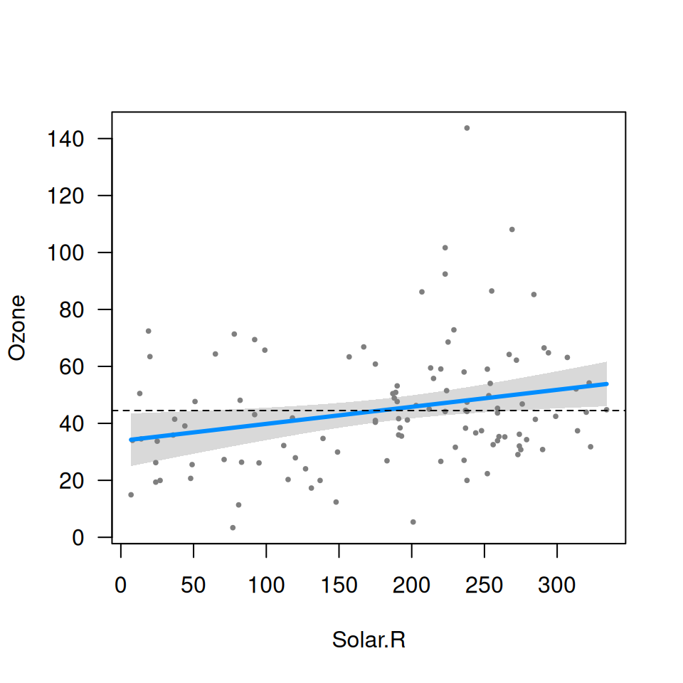
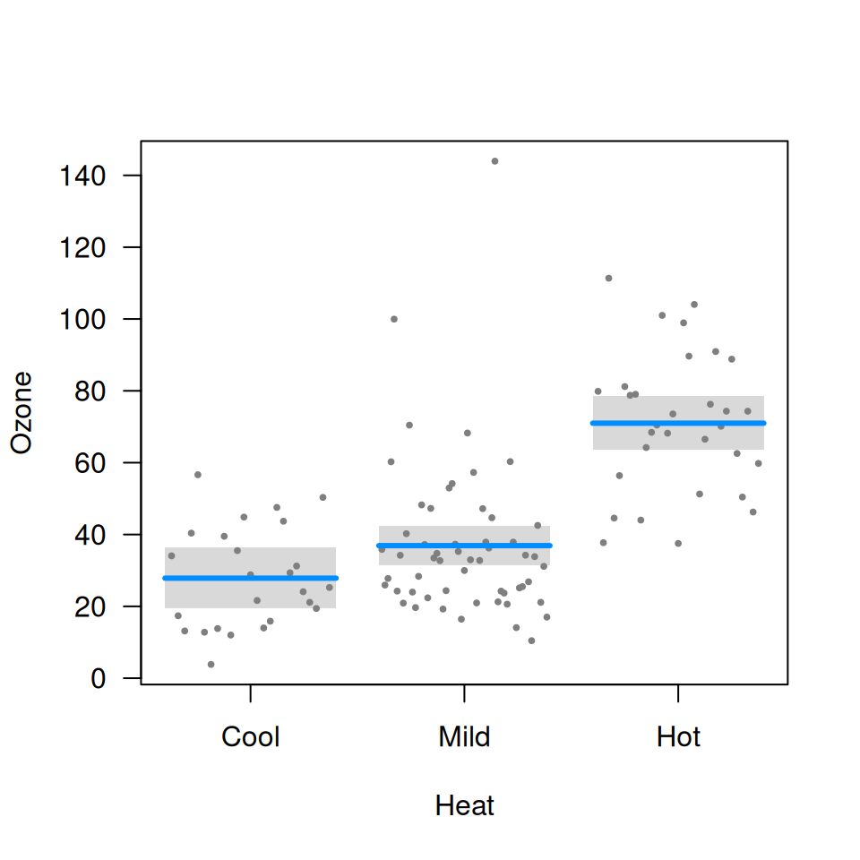

Let’s begin with a simple, additive, linear model:
fit <- lm(Ozone ~ Solar.R + Wind + Temp, data=airquality)
summary(fit)$coef
# Estimate Std. Error t value Pr(>|t|)
# (Intercept) -64.34207893 23.05472435 -2.790841 6.226638e-03
# Solar.R 0.05982059 0.02318647 2.579979 1.123664e-02
# Wind -3.33359131 0.65440710 -5.094063 1.515934e-06
# Temp 1.65209291 0.25352979 6.516366 2.423506e-09As the summary indicates, temperature has a clear positive effect on
ozone, wind has a clear negative effect, and solar radiation has a more
subtle effect: somewhat positive but could be due to random chance.
Visual summaries are often more informative and clear than numerical
summaries. Let’s see what visreg provides:

If you’re looking at the plots interactively in something like RStudio, you can click through the plots one by one. You can also recreate these figures individually with
The visual summaries reinforce the numeric ones: Temperature has an undeniable positive association with ozone, wind a clear negative association, and the effect of solar radiation is just barely significant. For example, if we add a horizontal like to the solar radiation plot:

we can see that the gray band just barely excludes a flat line.
All aspects of the above plot (the blue line, the partial residuals,
the band) depend on the specification of not only Solar.R
but also of all the other terms in the model. In other words, the result
is fully conditional on all components of the predictor; in
visreg, this type of plot is called a conditional
plot, and it is the default type. By default, the other terms in the
model are set to their median if the term is numeric or the most common
category if the term is a factor. Changing these defaults is disucssed
in conditioning.
In addition to continuous explanatory variables, visreg
also allows the easy visualization of differences between the levels of
categorical variables. The following block of code creates a factor
called Heat by discretizing Temp, and then
visualizes its relationship with Ozone:
airquality$Heat <- cut(airquality$Temp, 3, labels=c("Cool", "Mild", "Hot"))
fit <- lm(Ozone ~ Solar.R + Wind + Heat, data=airquality)
visreg(fit, "Heat")